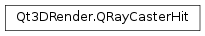

Qt3DRender.QRayCasterHit¶
Note
This class was introduced in Qt 5.11.
Synopsis¶
Functions¶
- def
distance() - def
entity() - def
entityId() - def
localIntersection() - def
primitiveIndex() - def
type() - def
vertex1Index() - def
vertex2Index() - def
vertex3Index() - def
worldIntersection()
Detailed Description¶
Details of a hit when casting a ray through a model
Qt3DRender.QRayCasterHitcontains the details of a successful hit when casting a ray through a model using aQt3DRender.QRayCasterorQt3DRender.QScreenRayCastercomponent.See also
Qt3DRender.QRayCasterQt3DRender.QScreenRayCasterQt3DRender.QPickingSettings
-
class
PySide2.Qt3DRender.Qt3DRender.QRayCasterHit¶ -
class
PySide2.Qt3DRender.Qt3DRender.QRayCasterHit(type, id, distance, localIntersect, worldIntersect, primitiveIndex, v1, v2, v3) -
class
PySide2.Qt3DRender.Qt3DRender.QRayCasterHit(other) Parameters: - v3 –
PySide2.QtCore.uint - worldIntersect –
PySide2.QtGui.QVector3D - distance –
PySide2.QtCore.float - primitiveIndex –
PySide2.QtCore.uint - localIntersect –
PySide2.QtGui.QVector3D - type –
PySide2.Qt3DRender.Qt3DRender::QRayCasterHit.HitType - other –
PySide2.Qt3DRender.Qt3DRender::QRayCasterHit - v2 –
PySide2.QtCore.uint - v1 –
PySide2.QtCore.uint - id –
PySide2.Qt3DCore.Qt3DCore::QNodeId
- v3 –
-
PySide2.Qt3DRender.Qt3DRender.QRayCasterHit.HitType¶ Specifies type of hit that was returned. This is controlled using
QPickingSettings.Constant Description Qt3DRender.QRayCasterHit.TriangleHit The picked primitive was a triangle and the vertex indices refer to the three points making up the triangle Qt3DRender.QRayCasterHit.LineHit The picked primitive was a line segment, and the first two vertices refer to the two points making up the line Qt3DRender.QRayCasterHit.PointHit The picked primitive was a single point; all 3 vertex indices will be undefined Qt3DRender.QRayCasterHit.EntityHit Only the bounding volume was considered; the primitive and vertex indices will be undefined
-
PySide2.Qt3DRender.Qt3DRender.QRayCasterHit.distance()¶ Return type: PySide2.QtCore.floatReturns the distance between the origin of the ray and the intersection point
-
PySide2.Qt3DRender.Qt3DRender.QRayCasterHit.entity()¶ Return type: PySide2.Qt3DCore.Qt3DCore::QEntityReturns a pointer to the entity that was hit
-
PySide2.Qt3DRender.Qt3DRender.QRayCasterHit.entityId()¶ Return type: PySide2.Qt3DCore.Qt3DCore::QNodeIdReturns the id of the entity that was hit
-
PySide2.Qt3DRender.Qt3DRender.QRayCasterHit.localIntersection()¶ Return type: PySide2.QtGui.QVector3DReturns the coordinates of the intersection point in the entity’s coordinate system
-
PySide2.Qt3DRender.Qt3DRender.QRayCasterHit.primitiveIndex()¶ Return type: PySide2.QtCore.uintReturns the index of the picked primitive
-
PySide2.Qt3DRender.Qt3DRender.QRayCasterHit.type()¶ Return type: PySide2.Qt3DRender.Qt3DRender::QRayCasterHit.HitTypeReturns the type of the hit
-
PySide2.Qt3DRender.Qt3DRender.QRayCasterHit.vertex1Index()¶ Return type: PySide2.QtCore.uintReturns the index of the first vertex of the picked primitive
-
PySide2.Qt3DRender.Qt3DRender.QRayCasterHit.vertex2Index()¶ Return type: PySide2.QtCore.uintReturns the index of the second vertex of the picked primitive
-
PySide2.Qt3DRender.Qt3DRender.QRayCasterHit.vertex3Index()¶ Return type: PySide2.QtCore.uintReturns the index of the third vertex of the picked primitive
-
PySide2.Qt3DRender.Qt3DRender.QRayCasterHit.worldIntersection()¶ Return type: PySide2.QtGui.QVector3DReturns the coordinates of the intersection point in the model’s coordinate system
© 2018 The Qt Company Ltd. Documentation contributions included herein are the copyrights of their respective owners. The documentation provided herein is licensed under the terms of the GNU Free Documentation License version 1.3 as published by the Free Software Foundation. Qt and respective logos are trademarks of The Qt Company Ltd. in Finland and/or other countries worldwide. All other trademarks are property of their respective owners.